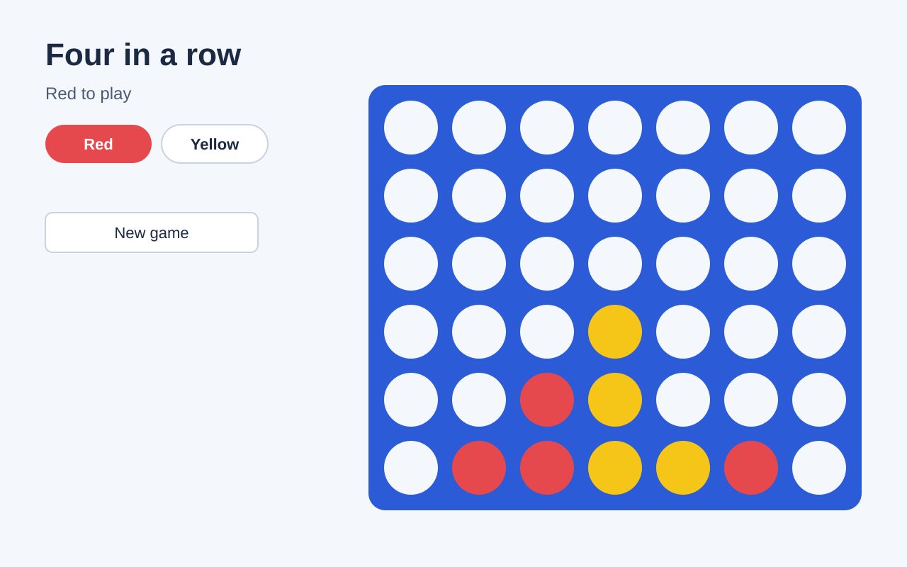
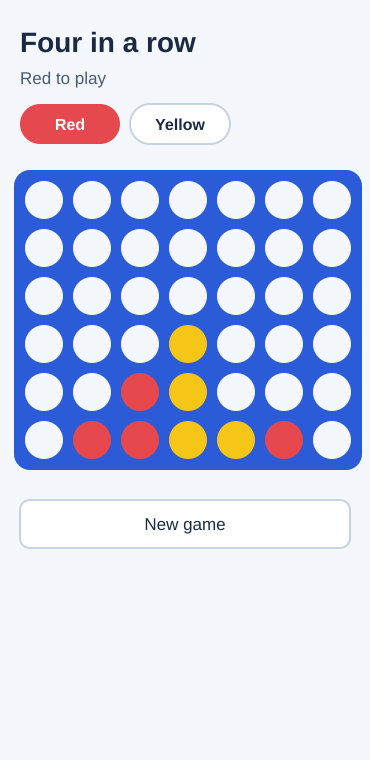

Owner, 2026-10-07: "the participants dont have access to the localhost dev server ... what would it look like to run that on the local network interface so if everyone was on the same Wifi it would work." Claude's app stays on localhost; a locked gateway in the plugin puts it on this laptop's Wi-Fi address while the host's switch is on. People in the room open it on their phones, laptops or tablets, on the same Wi-Fi, from a button or the wall's QR code.
The first time Claude shows something running on this laptop, the Now card asks once. The header carries a new Wi-Fi chip beside Claude's status; it reads Off until the host turns sharing on.
The first board: two colours and a drop animation

Anyone in the room on this laptop's Wi-Fi can open the app Claude is running, on a phone, laptop or tablet. You can turn it off at any time.
The first time a showing entry or a variant carries a link on this laptop. Share on this Wi-Fi turns it on; Not now dismisses it for the session. It is never offered again; the chip is always there.
In the header, beside Claude's status, on every host screen. Off by default. Clicking it opens the panel (L2). It is not shown on the Stage: the wall is for the room.
It still opens localhost on this laptop. Sharing adds a second way in for everyone else's devices; it changes nothing for the host.
The chip opens a panel under the header. It lists each app Claude has shown with its Wi-Fi address, how many devices have it open, the button for the wall, and the switch. Claude has since shown a second variant on another port; it got its own address.
Which board should we keep?
Anyone on this Wi-Fi with the link can open the app Claude is running. Turn it off at any time. Everyone loses it at once.
Shown in the room's Build Room page as Open the build, and on each choice. Works only on the same Wi-Fi as this laptop.
Green with a count of devices (phones, laptops, tablets) that opened it in the last 5 minutes. The count is the host's only sign that the Wi-Fi lets them through.
One plain line about who can open it. Off takes effect at once for the room: the next view no longer carries the link, and the plugin closes the door within a few seconds.
Each app Claude has shown gets its own Wi-Fi address; paths are kept. The key is not shown: Copy copies the full link with it, for pasting into a chat.
"Needs a change" from the room now comes from someone who has used the build, not just seen a screenshot.
Show the QR on the wall puts L4 on the Stage. A popover, not a dialog: the room keeps running behind it. X, Done and Escape all close it.
Off and On need no explanation. Starting covers the few seconds before the plugin answers. "None open yet" and "Didn't start" open a panel that says what to check.
The default. Nothing on this laptop is reachable from the Wi-Fi.
The host turned it on; the plugin has not answered yet. Up to 15 seconds.
People have it open, on whatever they brought.
On for 2 minutes and nobody has opened it. Perhaps this Wi-Fi keeps devices apart.
The plugin could not open the door. The panel says why.
Check that everyone is on the same Wi-Fi as this laptop: phones and tablets not on mobile data, laptops not on a work VPN. Try it yourself on another device first: scan the QR below.
Scan to open the build. If your own device cannot open it either, this Wi-Fi will not work for the room. Use screenshots, as before.
Other reasons it can say, in the same place:
Green is working, amber needs a look, red did not start. Every chip says what it means, so nothing relies on colour alone.
When this Wi-Fi will not do it, the panel says so and points back to screenshots. A tunnel or a hosted preview is later work (LATER.md).
The Connect panel's checklist gains one line: "If your Mac asks whether node may accept incoming connections, click Allow. That is how the room's phones, laptops and tablets on this Wi-Fi reach the build."
Left: the host pressed Show the QR on the wall, and the Stage shows it at Room size over whatever was there. Right: the Build screen keeps its screenshot and adds a small QR in the corner while sharing is on.
On your phone, laptop or tablet: scan the code, or press Open the build in Engage.
You need to be on the same Wi-Fi as this laptop.
Open the build yourselfPhone, laptop or tablet · same Wi-Fi
The QR is the same size as the join QR's enlarged view. It encodes the latest build's link with its key: anyone who can see the projector can open it, which is the point.
Close, Escape, or any key that changes screen. Turning sharing off closes it too.
An https page cannot frame an http address, so the Build screen stays a screenshot. The small QR is the way in for the room's devices; Open the build is the way in for this laptop.
Top: a participant on a laptop, with Open the build in the Now tab. Below, on a phone (a tablet is the same page, wider): the Now tab, what opens in a new tab, served from the host's laptop, and what anyone without the room's link sees.
Opens in a new tab · same Wi-Fi as the host
The first board: two colours and a drop animation
Try it, then say what you think.
A participant on a laptop: the same Now tab, laid out wide. Open the build opens the app in a new browser tab, so the Build Room stays open in this one.
Works on the same Wi-Fi as the host
The first board: two colours and a drop animation
Try it, then say what you think.
The button appears only while sharing is on and the plugin is answering, on every device.

The app as Claude runs it. The key has already become a cookie, so the address is clean. Claude's edits arrive by hot reload.
This build is only for people in the room. Join the session on your phone, laptop or tablet and press Open the build.
If you were in the room, the host may have turned sharing off.
Served by the gateway, never the app: no key, no cookie, or an old key from before sharing was turned off and on again.
The same page and the same button on every device; only the layout changes with the width. Copy never says "on your phone" alone.
Open the build opens the newest app Claude showed, in a new tab, so Engage stays open in the first. While a Choose ask is open, each option's card carries its own Open A, Open B, through the same door.
The feedback buttons are unchanged; the hint now asks people to try it first.
Plain words, no error code, and no part of the app. It names the most likely reason a person who was in the room sees it.